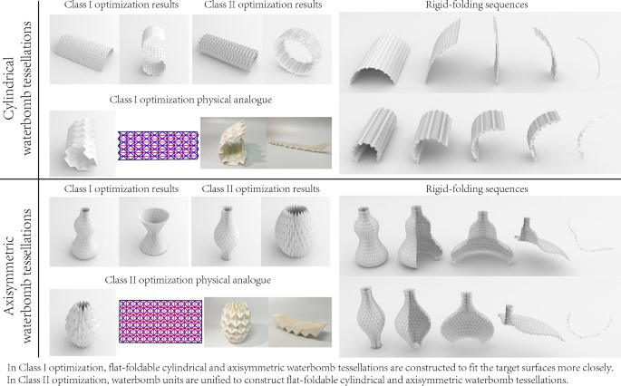
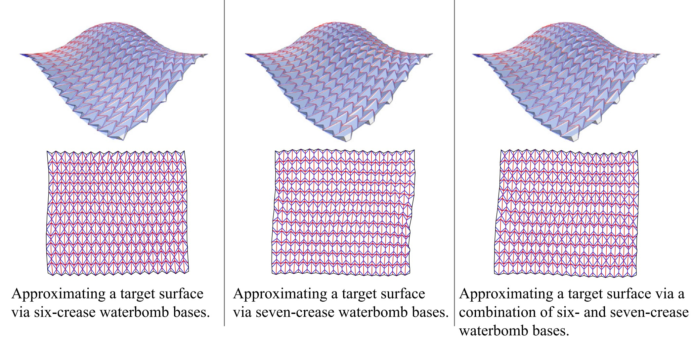
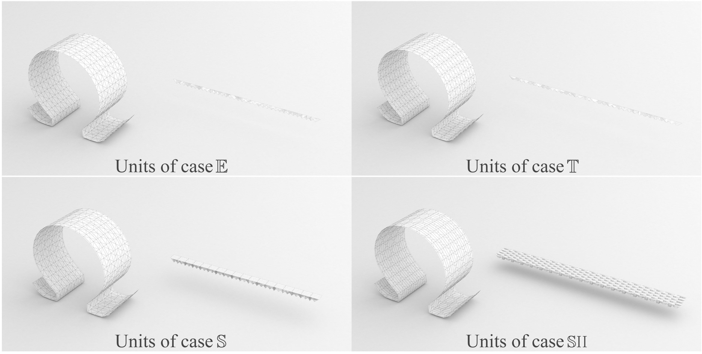
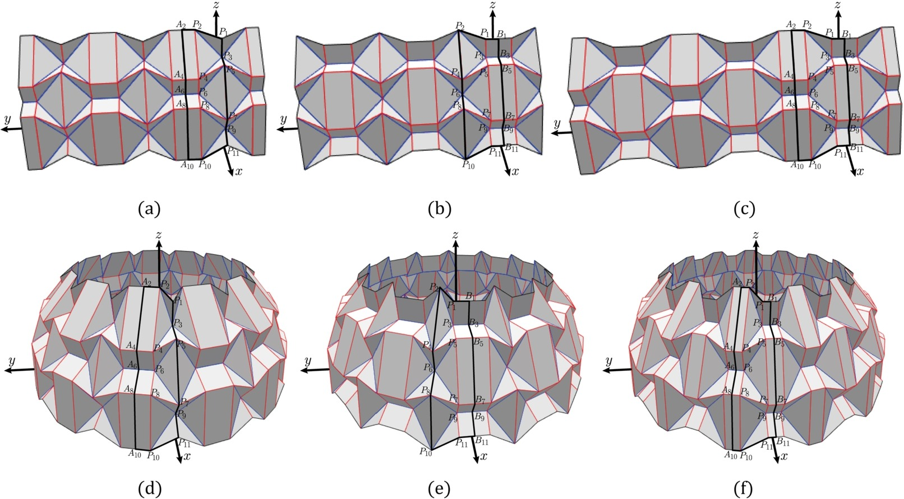
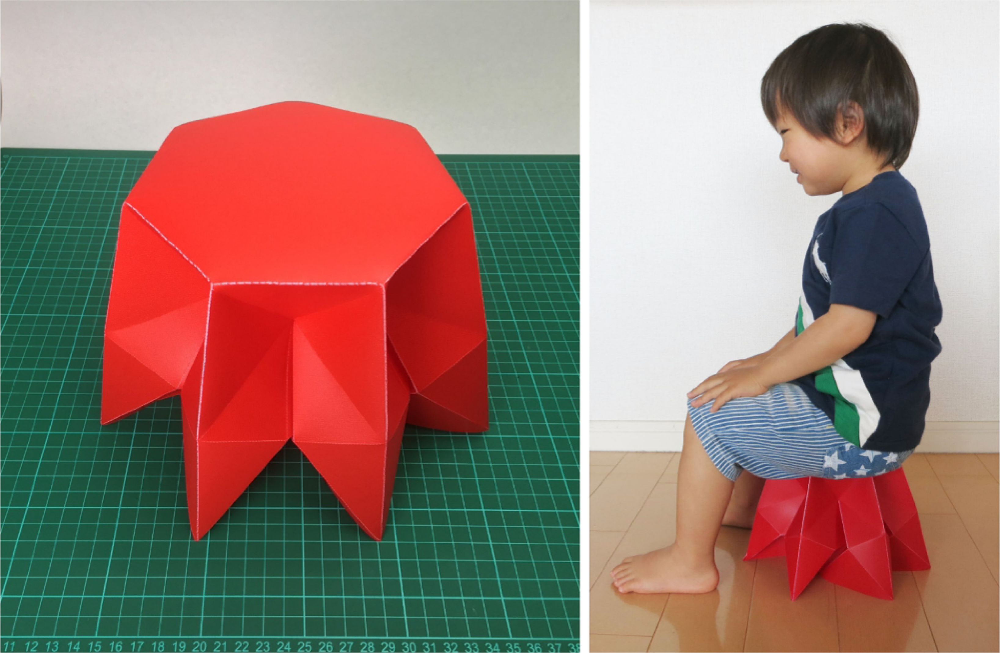
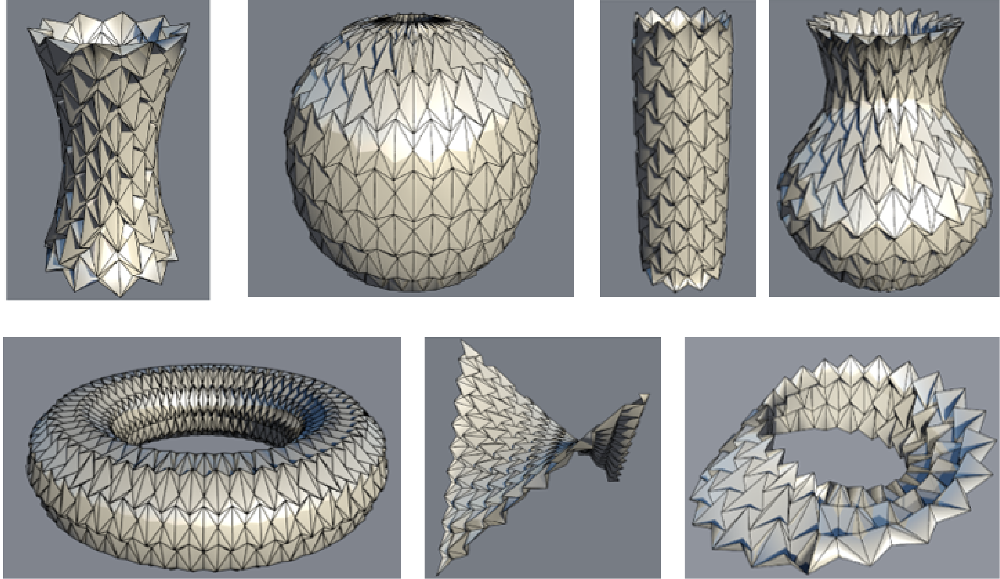
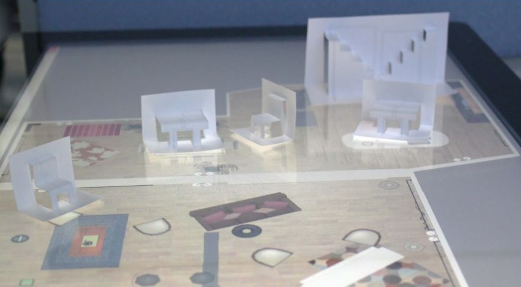
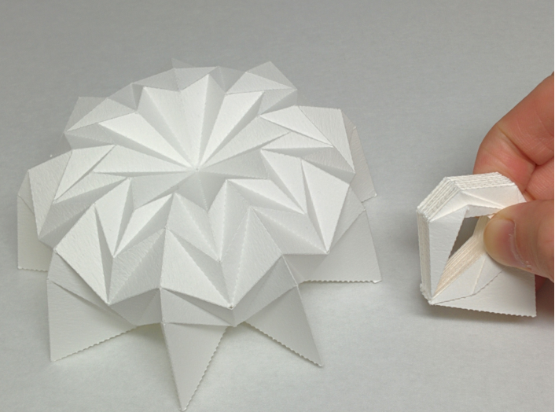

Profile
Name: 赵 岩
所属: 江苏大学 计算机科学与通信工程学院 副教授 硕导
简历:
2007.09-2011.07 西北农林科技大学 计算机科学与技术专业 工学学士 毕业 指导教师: 张志毅 教授
2011.10-2012.09 日本 岩手大学 短期研究生 毕业 指导教师: 今野 晃市 教授
2012.10-2014.09 日本 岩手大学 设计与媒体工程专业 工学硕士 毕业 指导教师: 今野晃市 教授
2015.04-2018.03 日本 筑波大学 计算机科学专业 工学博士 毕业 指导教师：三谷 纯 教授
2018.03～2019.05 江苏大学 计算机科学与通信工程学院 讲师
2019.05～現在 江苏大学 计算机科学与通信工程学院 副教授
E-mail: yanzhao_cs (AT) ujs.edu.cn, chat_zhaoyan (AT) 163.com
News
- 2024年3月 我们的论文“Modeling methods of cylindrical and axisymmetric waterbomb origami based on multi‑objective optimization”被期刊Multimedia Systems 接收，感谢审稿人的宝贵意见。
Research Interest
计算机图形学，计算折纸，折叠模拟与可视化Selected Projects
|  | Modeling methods of cylindrical and axisymmetric waterbomb origami based on multi‑objective optimization (Multimedia Systems, 2024)(Project) NEW |
|  | Inverse design of three-dimensional surfaces via waterbomb tessellations (Computer-Aided Design, 2023)(Project) |
|  | Constructing foldable cylindrical surfaces via unfolded waterbomb origami units (Journal of Computational Design and Engineering, 2022)(Project) |
|  | Computational Design Methods for Cylindrical and Axisymmetric Waterbomb Tessellations (Computer Aided Geometric Design, 2021)(Project) |
|  | A Computational Design Method for Tucking Axisymmetric Origami Consisting of Triangular Facets (Symmetry)(Project) |
 |
Design and motion analysis of axisymmetric 3D origami withgeneric six-crease bases Computer Aided Geometric Design, 2018)(Project) |
|  | Approximating 3D Surfaces using Generalized Waterbomb Tessellations (Journal of Computational Design and Engineering, 2018)(Project) |
|  | InsTangible: A Tangible User Interface Combining Pop-up Cards with Conductive Ink Printing (International Conference on Entertainment Computing 2017)(Project) |
|  | Geometry of Axisymmetric 3D Origami Consisting of Triangular Facets (Journal for Geometry and Graphics, 2017)(Project) |
Publications
Journals:
- Mingyue Zhang, Yan Zhao*:"Modeling methods of cylindrical and axisymmetric waterbomb origami based on multi‑objective optimization", Multimedia Systems, Volume 30, Article number 135, (2024).([DOI:https://doi.org/10.1007/s00530-024-01326-8])
- Yan Zhao*, Yinglei Wei:"Inverse design of three-dimensional surfaces via waterbomb tessellations", Computer-Aided Design, 2023, 156：103461.([DOI:https://doi.org/10.1016/j.cad.2022.103461])(SCI IF:3.652)
- Yan Zhao*, Yinglei Wei, Yiyang Jia, Shiling Li, Mingyue Zhang, Lanling Zeng, Yang Yang and Jun Mitani:"Constructing foldable cylindrical surfaces via unfolded waterbomb origami units", Journal of Computational Design and Engineering, 2022, 9(4)：1498-1510.([DOI:https://doi.org/10.1093/jcde/qwac062]) (SCI IF:6.167)
- Yan Zhao*, Shiling Li, Mingyue Zhang, Lanling Zeng, Yang Yang, Yoshihiro Kanamori, Jun Mitani:"Computational Design Methods for Cylindrical and Axisymmetric Waterbomb Tessellations", Computer Aided Geometric Design, Vol.91 (2021) pp.102037.([DOI:https://doi.org/10.1016/j.cagd.2021.102037]) (SCI IF:1.382)
- Yan Zhao*, Yuki Endo, Yoshihiro Kanamori, Jun Mitani: "A Computational Design Method for Tucking Axisymmetric Origami Consisting of Triangular Facets", Symmetry 2018, 10(10), 469. (SCIE IF: 1.213).
- Yan Zhao*, Yoshihiro Kanamori, Jun Mitani: "Design and Motion Analysis of Axisymmetric 3D Origami with Generic Six-crease Bases", Computer Aided Geometric Design, Vol. 59, pp. 86-97, 2018. ([Link])
[Preprint] (SCI IF: 1.522)
- Yan Zhao*, Yuki Endo, Yoshihiro Kanamori, Jun Mitani: "Approximating 3D Surfaces using Generalized Waterbomb Tessellations", Journal of Computational Design and Engineering, Vol. 5, Issue 4, pp. 442-448, 2018. [Link], (SCI IF: 6.167).
- Yan Zhao, Yoshihiro Kanamori, Jun Mitani: "Geometry of Axisymmetric 3D Origami Consisting of Triangular Facets", Journal for Geometry and Graphics, Vol. 21, No. 1, pp. 107-118, 2017.
[Link]
[Preprint].
International:
- Yan Zhao*, Yuta Sugiura*, Mitsunori Tada, Jun Mitani: "InsTangible: A Tangible User Interface Combining Pop-up Cards with Conductive Ink Printing", Lecture Notes in Computer Science (International Conference on Entertainment Computing 2017, 72-80) [DOI] [Preprint] [Preprint in Japanese] [Video] (EI).
Grants:
- 2011年10月-2014年9月 获日本文部科学省（MONBUKAGAKUSHO）奖学金
- 2017年4月-2018年3月 获日本文部科学省（MONBUKAGAKUSHO）奖学金
- 国家自然科学基金青年基金 “基于几何约束的三维折叠结构交互式建模研究”（No.61902155）
- 江苏大学高级人才科研启动基金（No.19JDG024）